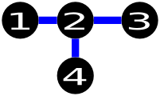
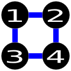
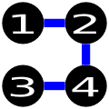
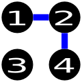

CodeForces 330B Road Construction
题目：
B. Road Construction
time limit per test
2 seconds
memory limit per test
256 megabytes
input
standard input
output
standard output
A country has n cities. Initially, there is no road in the country. One day, the king decides to construct some roads connecting pairs of cities. Roads can be traversed either way. He wants those roads to be constructed in such a way that it is possible to go from each city to any other city by traversing at most two roads. You are also given m pairs of cities — roads cannot be constructed between these pairs of cities.
Your task is to construct the minimum number of roads that still satisfy the above conditions. The constraints will guarantee that this is always possible.
Input
The first line consists of two integers n and m .
Then m lines follow, each consisting of two integers ai and bi (1 ≤ ai, bi ≤ n, ai ≠ bi), which means that it is not possible to construct a road connecting cities ai and bi. Consider the cities are numbered from 1 to n.
It is guaranteed that every pair of cities will appear at most once in the input.
Output
You should print an integer s: the minimum number of roads that should be constructed, in the first line. Then s lines should follow, each consisting of two integers ai and bi (1 ≤ ai, bi ≤ n, ai ≠ bi), which means that a road should be constructed between cities ai and bi.
If there are several solutions, you may print any of them.
Examples
Input
4 1
1 3
Output
3
1 2
4 2
2 3
note
this is one possible solution of the example: 
These are examples of wrong solutions:  The above solution is wrong because it doesn’t use the minimum number of edges (4 vs 3). In addition, it also tries to construct a road between cities 1 and 3, while the input specifies that it is not allowed to construct a road between the pair.  The above solution is wrong because you need to traverse at least 3 roads to go from city 1 to city 3, whereas in your country it must be possible to go from any city to another by traversing at most 2 roads.  Finally, the above solution is wrong because it must be possible to go from any city to another, whereas it is not possible in this country to go from city 1 to 3, 2 to 3, and 4 to 3.
代码：
1 |
|
解析&吐槽：
这道题的套路非常深。题目要求用尽量少的桥将几个城市连接起来，从一个城市到另一个城市最多需要 经过两个桥，同时给出一些两两成对的城市，这两个城市之间不能架桥，题目保证有解。输出桥的数量 和成对的城市——表示这两个城市之间要架一座桥。最优解有很多，输入其中任意一个即可。
分析题目之后我们发现，如果想要在两座桥之内到达任意城市并且桥的数量尽量少，那么每个城市都必 须连接到同一个公共的城市，最终的桥梁成放射状。我们可以用反证法证明以上结论：
如果有一个城市 没有连接到公共城市，它必须要连接到公共城市放射出来的一个城市中（保证桥梁数量最少时不能有环 形），此时它到达公共城市需要经过两座桥，则到达其他与公共城市相连的城市至少需要三座桥，不合 题意。
那么如果题目保证有解，一定会有一个城市可以与任意的城市相连，我们只需要找到这个城市，让它和其它所有 城市配对即可。桥的数量就是城市的数量-1。

本作品采用 署名-相同方式共享 4.0 国际 进行许可。欢迎转载、使用、重新发布，但务必保留文章署名 “不科学的科学君” (Liu233w) 与博客链接： https://liu233w.github.io ，基于本文修改后的作品务必以相同的许可发布。如有任何疑问，请 与我联系 。